vi ipsec.conf
to configure our tunnel we're going to need to add a connection profile to our ipsec.conf filefirst we declare our tunnel name conceal


type: we use trial and error on the tunnel being either tunnel OR transport type and see which one works
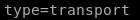
next we set keyexchange
because our ike-scan reported 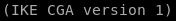
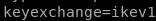
next we set left (think left side of the connection or our attacking machine IP)
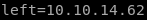
next we set right, or conceal's IP address
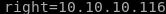
next we set authentication type which is authby to pre-shared key or 'psk'
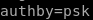
next we set the encapsulting security payload or ‘esp’ which is and 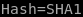
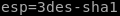
next we set the internet key exchange or IKE key which is 3des-sha1-modp24

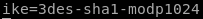
next we do lifetime
 which we know is 8 hours from our hex to decimal to hours
which we know is 8 hours from our hex to decimal to hours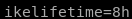
finally we add and auto=start parameter
our connection tunnel profile looks like this:

also its nice to add fragmentation=yes since it is supported in the ike-scan
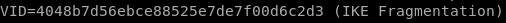
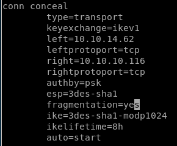